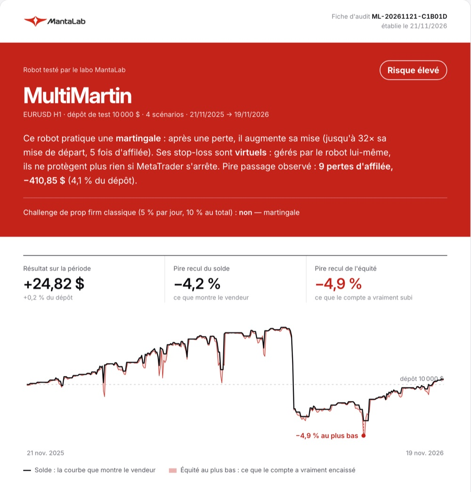

Avant d'acheter un robot, faites-le tester.
Le labo fait tourner le robot lui-même et vous remet sa fiche d'audit. Pas le rapport du vendeur : le nôtre.

Voir une fiche complète ↗Ce que contient la fiche.
Le verdictRisque élevé, moyen ou faible, avec les raisons et des exemples datés.
Les piègesMartingale, grille, stop absent ou « virtuel », trades ultra-courts.
La vraie courbeL'équité minute par minute : les pertes que la courbe du vendeur cache.
Le pire observéSérie de pertes, exposition maximale, drawdown.
Deux notes sur 100Sécurité et solidité : avantage réel ou simple chance ?
6 challengesFTMO, FundedNext, The5ers : vos chances de réussite.
Comment ça se passe.
Vous commandezEt vous indiquez le robot : son lien MQL5, ou son fichier.
Le labo le testeRéglages par défaut (ou les vôtres), 4 scénarios, un an d'historique.
Vous recevez la ficheEn PDF, sous 48 h.
Quels robots ?
Un robot du Market MQL5Il suffit qu'il ait une démo gratuite. Donnez-nous son lien.
Un robot dont vous avez le fichierVendu ailleurs, ou créé avec ChatGPT ou Claude : envoyez le .ex5 ou le code .mq5.
Si le labo ne peut pas tester votre robot, vous êtes remboursé intégralement. Un robot acheté sur le Market est verrouillé sur le compte de l'acheteur : pour ceux-là, il faut la démo.
Questions fréquentes.
Est-ce un conseil d'investissement ?
Non. La fiche décrit ce que le robot a fait dans nos tests. Les résultats passés ne préjugent pas des résultats futurs.
Êtes-vous liés aux vendeurs de robots ?
Non. Aucun vendeur ne paie MantaLab, ni MetaQuotes, ni les prop firms.
Pourquoi pas le rapport du vendeur ?
Parce que le vendeur choisit la période, les réglages et les conditions. Le labo fait ses propres tests, dans des conditions moins favorables.
Quelles sont les limites ?
Un test décrit le passé, sur un marché et une période. La fiche dit toujours exactement ce qui a été testé.